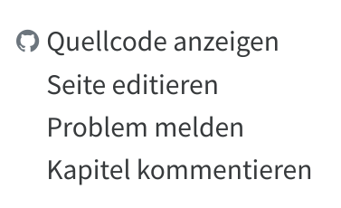

Anhang E — Hinweise zur Mitarbeit
Dieses Handbuch wird in einem offenen Prozess erarbeitet und verbessert. Mitarbeit ist dabei grundsätzlich sehr willkommen und in verschiedener Form möglich. Voraussetzung ist ein Verständnis des Arbeitsablauf, die Einhaltung des Styleguide und die freie Lizenzierung der eigenen Beiträge. Die Dokumentation der technischen Umsetzung ist nur relevant wenn Änderungen direkt im Markdown-Quelltext auf dem eigenen Rechner umgesetzt werden sollen oder als Inspiration für eigene Buchprojekte.
Arbeitsablauf
Alle Kapitel wurden in Booksprints vor Ort geplant und in Form von gemeinsam bearbeitbar Dokumenten bei Google Docs erstellt. Die Kapitel wurden anschließend einmalig ins Markdown-Format übertragen und auf it-in-bibliotheken.de veröffentlicht (siehe Technische Umsetzung). Abgesehen von den Anhängen stehen die Inhalte des Handbuchs somit nun in zwei Formen zur Verfügung:
- Aktuelle Quelltexte in Quarto Markdown unter https://github.com/pro4bib/handbuch-it-in-bibliotheken
- Snapshots der Kapitel in rudimentärem Layout als kommentierbares Dokument in Google Drive
Änderungen und Beiträge zum Handbuch sind somit auf folgende Weisen möglich:
Bearbeitungsvorschläge und Kommentare in Google Docs („Kapitel Kommentieren“). Dies ist im Zweifelsfall die einfachste Methode aber möglicherweise etwas langsamer: Beiträge von Google Docs werden in unregelmäßigen Abständen von der Redaktion in die Markdown-Quellen übernommen und die Google Docs Dokumente ebenso unregelmäßig aktualisiert. Bilder, Literaturverzeichnis und Anhänge wie das Glossar können auf diese Weise nicht geändert werden.
Direkte Bearbeitung der Markdown-Quellen durch einen Pull-Request („Seite editieren“). Dies erfordert einen GitHub-Account und rudimentäre Markdown-Kenntnisse, dafür können die Beiträge am schnellsten übernommen werden.
Öffentlicher Kommentar als GitHub-Issue („Problem melden“). Dies erfordert einen GitHub-Account und ggf. anschließende öffentliche Diskussion.
Persönlicher Hinweis an die Autor*innen (siehe Anhang D)
In der HTML-Version unter https://it-in-bibliotheken.de/ gibt es rechts neben jedem Kapitel etsprechende Feedback-Links:

Zur Vorbereitung der Druckversion gab es nach den Booksprints, in denen die wesentlichen Inhalte des Buches geschrieben wurden, eine Lektoratsphase, bei der einzelne Kapitel gezielt ein bis zwei Personen zur Prüfung zugewiesen wurden. Der wesentliche Arbeitsablauf war allerdings der Gleiche.
Styleguide
Dieser Styleguide soll eine einheitliche Form trotz unterschiedlicher Autor*innen gewährleisten. Dazu gibt es Hinweise zu Zielgruppe, Stil und Aktualität, Schreibweise und Struktur sowie Vorgaben zu besonderen Inhalten wie Bildern und anderen Medien, Literaturverzeichnis und Abkürzungsverzeichnis.
Bei der Bearbeitung sollten folgende Grundsätze beachtet werden:
Wir verzichten auf individuelle Autor*innenschaft an einzelnen Textteilen. Alle können an allen Teilen mitarbeiten.
Das Handbuch ist keine wissenschaftliche Arbeit, sondern soll einen Überblick geben. Für Details kann auf weiterführende Quellen verwiesen werden.
Personas
Zur Klärung der Zielgruppe dieses Handbuchs wurden einige sogenannte Personas definiert:
Janine Buchinger: Janine leitet die Stadtbibliothek in einer Stadt mit 250.000 Einwohnern. Die Bibliothek besteht aus einer Zentrale und zwei Zweigstellen. Mit den Schulbüchereien besteht eine Kooperation für fachliche Beratung und gemeinsame Aktivitäten bei der Informationskompetenz-Vermittlung.
Dr. Tillmann Schuppe: Tillmann ist Leiter einer Fachhochschulbibliothek mit 500.000 Medieneinheiten. Die Bibliothek gehört einem Bibliotheksverbund an. Die Bibliothek plant einen Neubau, der gemeinsam mit dem Rechen- und Medienzentrum bezogen werden soll.
Magda Olsowski: Magda ist studierte Informatikerin und leitet die Gruppe Forschungsdatenmanagement an einer großen Universitätsbibliothek. Sie hat keine bibliothekarische Vorbildung.
Alicia Meyer: Alicia studiert Bibliotheksmanagement und plant eine Masterarbeit, in der sie die Implementierungsprozesse von Software analysieren möchte.
Robert Pohlmann: Robert leitet die IT-Abteilung einer mittelgroßen Universitätsbibliothek und ist nebenberuflich Lehrbeauftragter für einen bibliothekarischen Studiengang.
Stil und Aktualität
Journalistische oder enzyklopädische Neutralität sind nicht oberstes Prinzip dieses Buches. Es soll vielmehr fundiert und praxisorientiert informieren und beraten und darf dabei auch parteiisch sein.
Dieses Buch ist keine wissenschaftliche Forschungsveröffentlichung. Nicht jede Aussage muss mit einer Quelle belegt werden. Für die Anwendung in der Hochschullehre reicht es, wenn das Buch zentrale Aussagen belegt bzw. auf die wichtigsten aktuellen Studien verweist und somit auch Tipps zur weiterführenden Lektüre bietet.
Das Buch sollte in 2-5 Jahren noch aktuell und verständlich sein, aber nicht mehr unbedingt in 10 Jahren.
Das Buch soll als Nachschlagewerk dienen, das nicht vollständig durchgelesen werden muss. Dabei helfen Redundanz und Querverweise (siehe Hinweise zur Struktur).
Zumindest die einzelnen Kapitel sollen sich gut durchlesen lassen. Insbesondere Brüche in Stil und Aussage, Widersprüche oder unnötige Redundanzen sind innerhalb der Kapitel unbedingt zu vermeiden. Unter Berücksichtung des Nachschlagewerk-Charakters streben wir auch einen guten Lesefluss innerhalb der Kapitel an.
Struktur
Struktur des Texts
Wir verwenden kurze, unverschachtelte Sätze.
Wir erzeugen Sinnabschnitte, die möglichst für sich stehend verständlich sind.
Wir schreiben stark strukturiert, also
mit vielen Zwischenüberschriften, bis maximal zur vierten Gliederungsebene,
wo es inhaltlich passt, in stichpunktartigen Listen und
mit Hervorhebung wichtiger Begriff durch Fettdruck als Gliederungshilfe.
Wir verwenden Infoboxen, die auch unabhängig vom übrigen Text lesbar sind.
Wir liefern wichtige Informationen zusätzlich zum Text in Form von Bildern, Tabellen, Listen, Infoboxen und/oder Zusammenfassungen.
Struktur der Hauptkapitel
Das Handbuch behandelt aufgeteilt in Hauptkapitel die wesentlichen Themen rund um IT in Bibliotheken.
Jedes Kapitel beginnt mit einer Kurzfassung als Infobox gefolgt von einer Einleitung und endet mit einem Abschnitt Zusammenfassung und Ausblick.
Kapitel haben normalerweise einen Umfang von rund 4.000 Wörtern. Deutlich längere Kapitel sind darauf zu prüfen, ob sie sich in mehrere Kapitel trennen lassen, und wenn das nicht möglich ist, müssen sie sorgfältig in Unterkapitel aufgeteilt werden.
Die Strukturierung in Unterkapitel sollte stimmig und ausgewogen sein, insbesondere mit Blick auf die Ziele des Buches.
Die Übergänge zwischen einzelnen Unterabschnitten sollten stimmig sein.
Jedes Kapitel beinhaltet ein aussagekräftiges Metadatenfeld
descriptionfür Suchmaschinen (maximal 158 Zeichen)
Schreibweise, Fachbegriffe und Verweise
Wir verwenden im gesamten Buch gendergerechte Schreibweise mit Sternchen (*). In Markdown ist es sicherer dem Sternchen einen Backslash voranzustellen, z.B.
Autor\*innen.Eine Schreibweise für häufig verwendete Fachbegriffe sollte quer durch das Buch eingehalten werden, so z.B. BMS für Bibliotheksmanagementsysteme
Fachbegriffe (z.B. Bibliotheksverbund) werden dort verwendet, wo sie wiederholt relevant sind, und werden bei ihrer ersten Erwähnung definiert. Abkürzungen werden zusätzlich im Abkürzungsverzeichnis erfasst.
Wir vermeiden IT-Jargon.
Wir vermeiden Substantivierung („Digitalisierungswürdigkeit“) und unnötige Passiv-Formen.
Quellen sollten nur dann genannt werden wenn in der jeweiligen Textpassage auch wirklich paraphrasiert oder wörtlich zitiert wird.
Typografie
Abkürzungen werden durch geschützte Leerzeichen getrennt (z. B.)
Gerade Anführungszeichen
"..."werden automatisch durch die Deutschland und Österreich übliche Anführungszeichen („…“) ersetzt.
Externe Links, die nur auf Anbieter oder andere Websites verweisen, werden inline verlinkt.
Links, die auf später entstehende Kapitel verweisen, werden durch eckige Klammern kenntlich gemacht.
Kursive Hervorhebung sollte nur für Namen und Glossareinträge verwendet werden.
Wir verzichten auf Fußnoten.
Bilder und andere Medien
Bilder und andere Mediendateien kommen in das Verzeichnis
mediaim git-Repository. Alternativ können sie von externen Quellen per URL eingebunden werden wenn die Quelle voraussichtlich dauerhaft verfügbar ist.Bilder sollten möglichst als Vektorgrafik (SVG) bereitgestellt werden.
Standardschriftart ist Source Sans und Standard-Farbe für Hervorhebungen ist Blau mit dem Farbcode
#2780e3und darauf aufbauende Hellblau-Töne.Bitte nutzt sprechende Dateinamen!
Literaturverzeichnis
Die zitierte und weiterführende Literatur wird in einer Zotero-Gruppe unter https://www.zotero.org/groups/4673379/it_in_bibliotheken verwaltet. Der BibLaTex-Export dieser Bibliographie wird mit Aufruf von make refs von dort heruntergeladen und unter references.bib gespeichert. Diese Datei sollte also nicht direkt bearbeitet werden! Innerhalb des Markdown-Quelltext kann mittels Pandoc-Citation Syntax und dem jeweiligen Citekey aus references.bib auf Literatur verwiesen werden.
Glossar
Das Abkürzungsverzeichnis in der Datei glossar.yml enthält erklärungswürdige Begriffe mit Kurzbeschreibung und optionalem Link auf eine weiterführende Quelle (meist Wikipedia). Es werden _keine_ Firmennamen aufgenommen, auch wenn sie Akronyme sind. Die Glossarbegriffe werden in den Textdateien zur Hervorhebung kursiv gesetzt (in Markdown so ein *Fachbegriff*). Bei Erzeugung der HTML-Version des Handbuchs wird die Hervorhebung in einen Tooltip umgewandelt.
Autor*innen-Verzeichnis
Wenn Du etwas beigetragen hast und möchtest, dass Du im Verzeichnis der Autor*innen auftauchst, trage Dich in der YAML-Datei contributors.yml ein. Die Einträge sollten nach Nachname sortiert werden. Die Felder email, position und orcid sind optional.
Technische Umsetzung
Die Master-Version des Handbuch liegt in einem git-Repository unter https://github.com/pro4bib/handbuch-it-in-bibliotheken. Die Ergebnisdateien werden automatisch via GitHub und einen Server der VZG mit der Software quarto aktualisiert, sodass unter https://it-in-bibliotheken.de/ immer der aktuellste Stand einsehbar sein sollte.
Verzeichnisstruktur
Die Markdown-Dateien im Wurzelverzeichnis (*.md) sind die Masterdateien.
about.ymlbibliographische Metadaten (Titel, Abstract…)_quarto.ymlzentrale Konfigurationsdatei zur Anpassung der Konvertierung mit Quartoreferences.bibLiteraturverzeichnis (bitte nicht direkt bearbeiten!)
Weitere Unterverzeichnisse:
media/Bilder und andere Medien
Die Dateien in folgenden Verzeichnissen sollen nicht per Hand geändert werden:
_gdrive/von bzw. nach Google-Drive importierte bzw. exportierte Kapitel.
Konvertierung
Zur Anpassung der Konvertierung des Handbuchs mit quarto muss das Repository lokale geklont und Quarto installiert werden. Für die DOCX-Ausgabe muss außerdem rsvg-convert installiert werden (Paket librsvg2-bin bzw. libsrvg).
Die Aufrufe sind zur Vereinfachung in Makefile zusammengefasst:
make previewkonvertiert das Handbuch nach HTML und ermöglicht eine Vorschau unter http://localhost:15745/ (der Port ist die Postleitzahl von Wildau). Die HTML-Ansicht wird automatisch aktualisiert wenn die Quelldateien lokale geändert werden.make html,make docxundmake pdferzeugt jeweils die HTML-, DOCX- oder PDF-Version und legt das Ergebnis im Verzeichnis_bookab. HTML- und DOCX-Version werden auch automatisch nach jedem Push auf GitHub erzeugt.make allerzeugt alle Ausgabeformate und aktualisiert zusätzlich die einzelnen Google-Docs-Dateien.make refsaktualisiert das Literaturverzeichnis inreferences.bibvon Zotero.
Mit dem Skript chapter im Verzeichnis _gdrive können
Kapitel von Google Docs heruntergeladen und nach Markdown konvertiert und
DOCX-Dateien der einzelnen Kapitel zum Hochladen bei Goodle Docs erstellt werden (siehe
Makefileim Verzeichnis_gdrive)